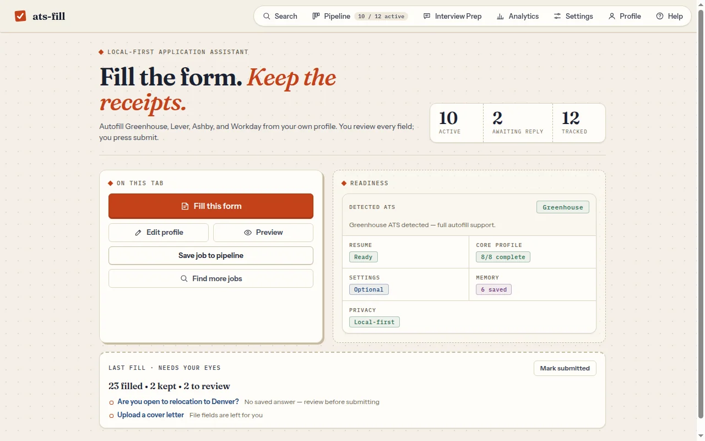
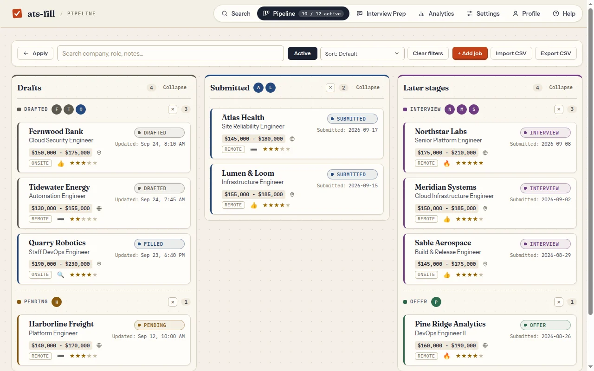
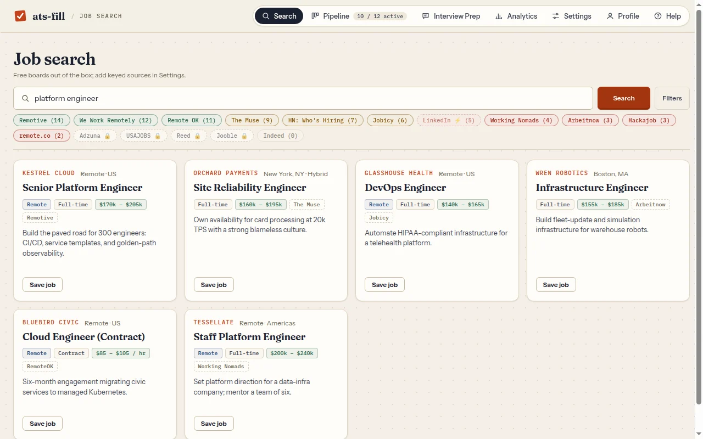
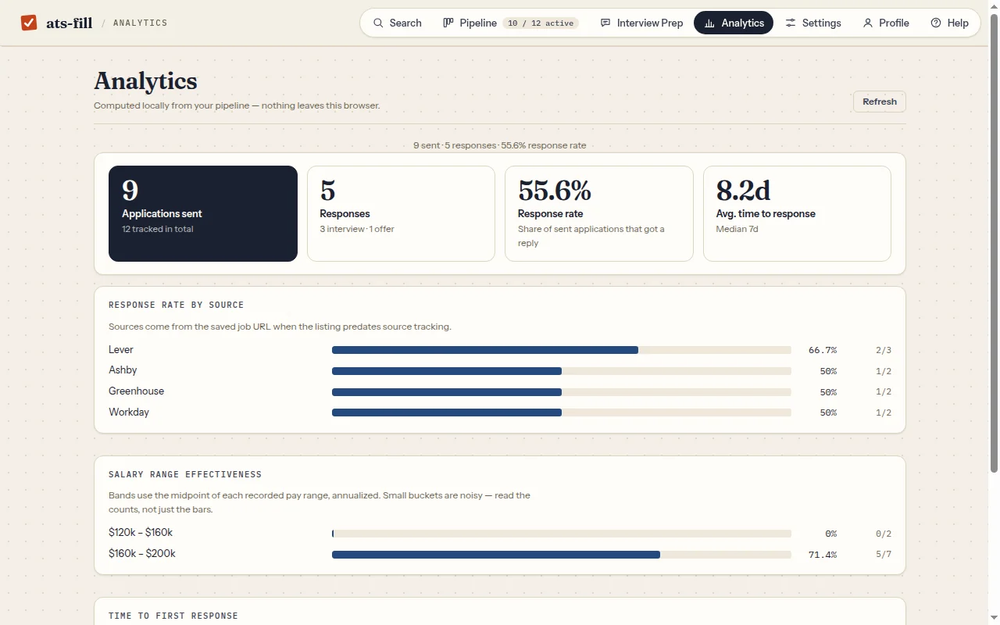
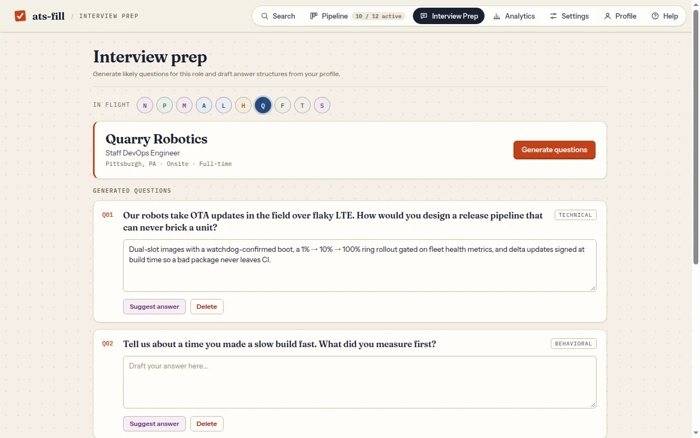

Fill
Save your profile once. Fill every form.
Upload your resume and answer the usual questions one time. Land on an application, open ats-fill and press Fill this form. It detects the ATS, maps the fields and fills them in place.
- Anything it can't answer is flagged for you, not guessed
- File uploads and the submit button stay yours
- Answers you edit can be remembered, reviewed and removed in Profile

Track
Every application, on one board.
Save a job from the page or paste the description. The pipeline keeps pay bands, location, notes, verdicts and scorecards, and moves each job from drafted to submitted to interview to offer. Import and export CSV whenever you like.

Search
16 job boards. One search box.
Nine keyless boards work out of the box, including Remotive, We Work Remotely, Remote OK and HN Who's Hiring. Add your own keys for Adzuna, USAJOBS, Reed and Jooble, or any RSS feed. Results are deduped, and one click saves a job to your pipeline.

Learn
See what's actually working.
Analytics are computed locally from your pipeline: response rate by source, which salary bands get replies, and how long employers take to answer. Interview prep turns a job description and your profile into practice questions you can draft and save.
- AI extras use your own Gemini key (optional, BYOK)
- Form fill, tracking and analytics work without any key


Privacy
Your job hunt stays in your browser.
No backend, no sign-up, no telemetry. Your profile, resume, answers and pipeline live in Chrome's local storage. Outside requests happen only when you trigger them: job boards you search, the optional LinkedIn or Google profile import, and Google's Gemini API if you add your own key. It never submits an application for you.
- Server
- None
- Account
- None
- Data
- Local to Chrome
- AI
- Optional · your Gemini key
- Submit
- Always you
- License
- MIT
Install it.
Not on the Chrome Web Store yet. Until it is, load it unpacked from the repo; it takes about two minutes.
$ git clone https://github.com/nitsuah/ats-fill.git- Clone the repo (or download the ZIP and unzip it).
- Open
chrome://extensionsand turn on Developer mode. - Click Load unpacked and pick the
ats-fillfolder. - Open the extension, upload your resume and fill in your profile. Adding a free Gemini key is optional.
- Go to a job application and press Fill this form.